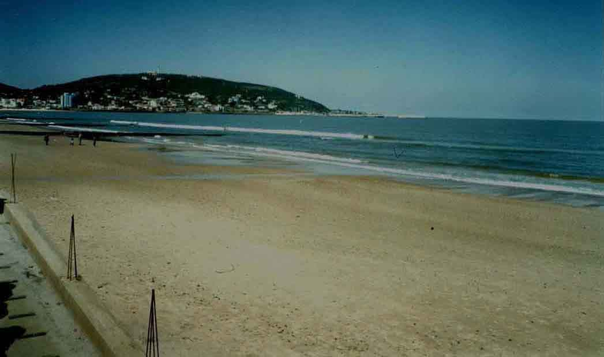

Piriapolis, Uruguay
Type: Street Circuit Length: 1.615 miles

This photograph of the beach was taken from the start of the pit area
Photograph kindly supplied by Ignacio Bettosini (http://www.NaBUru.WebUruguayo.com)